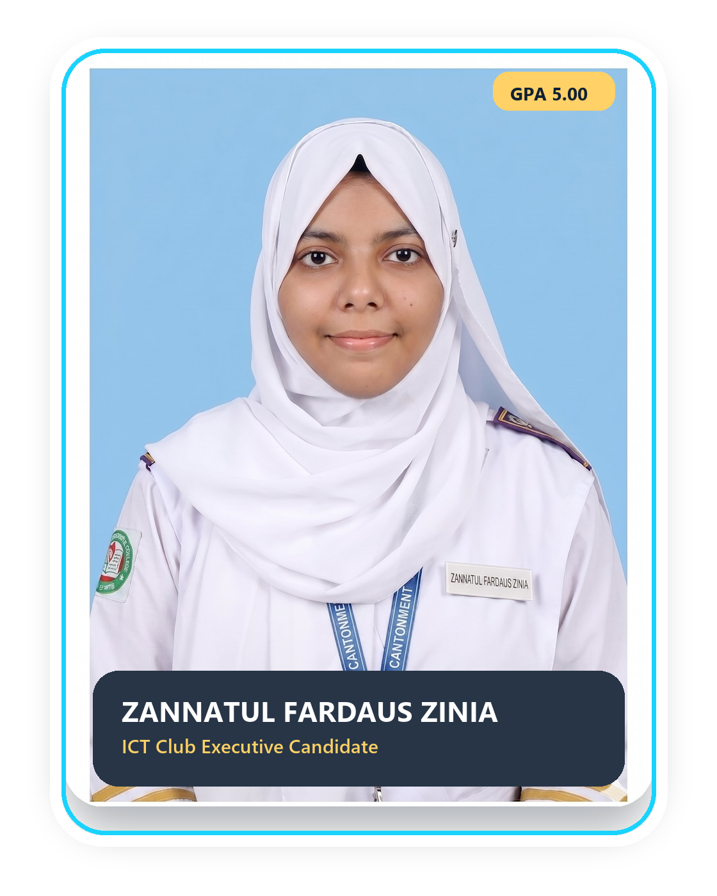
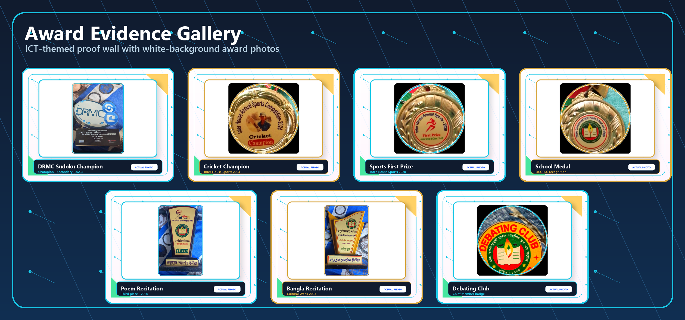
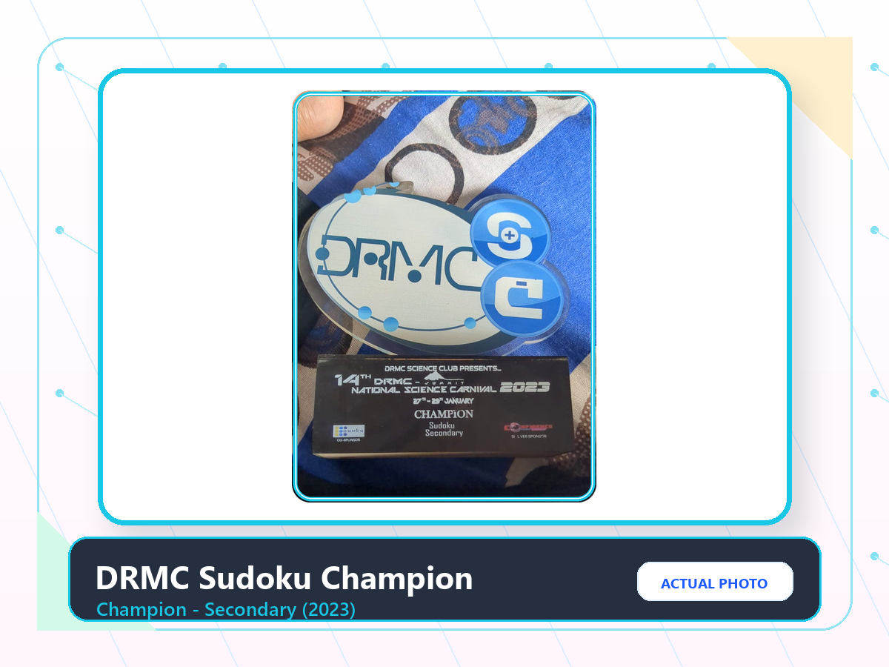
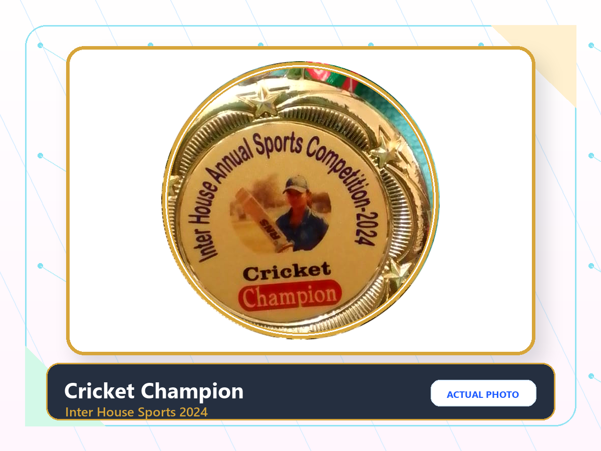
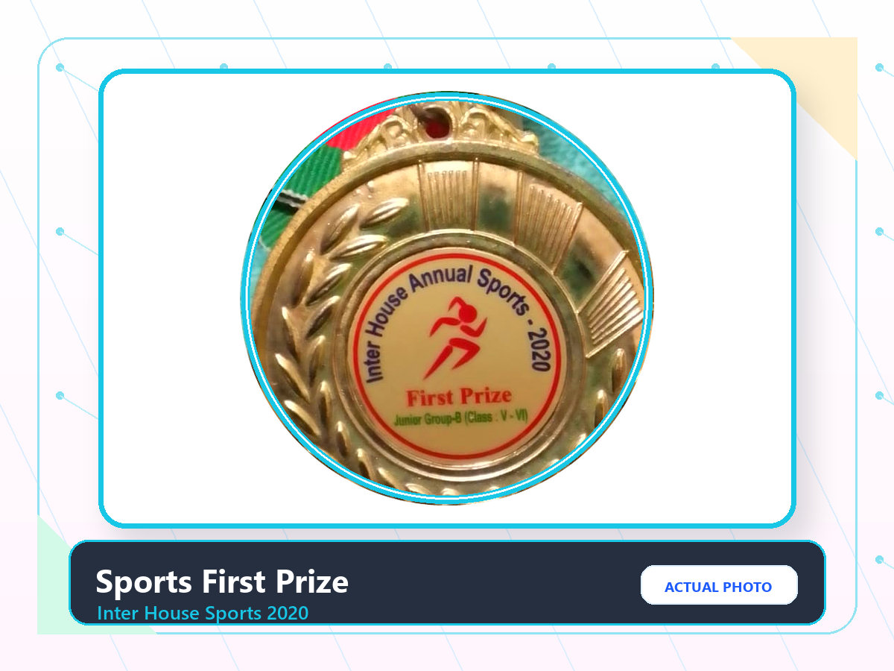
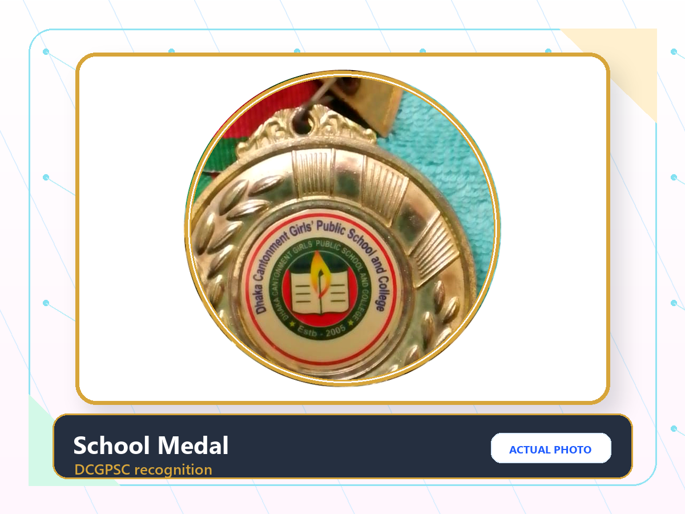
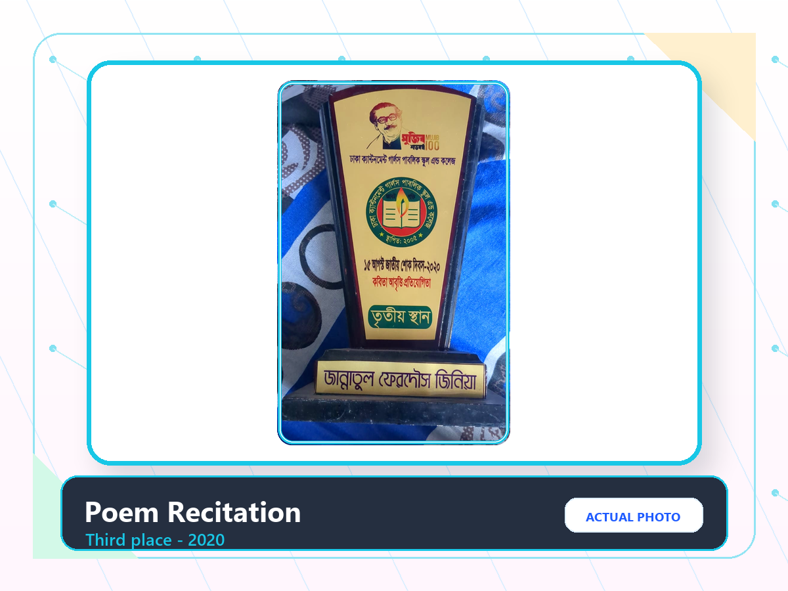
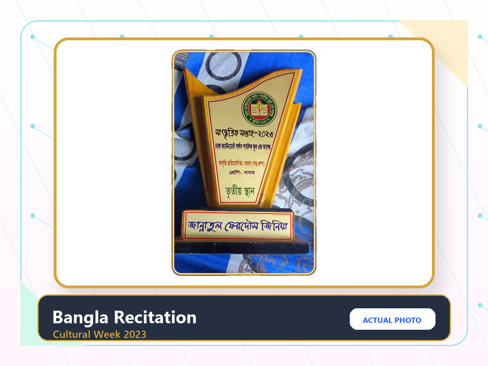
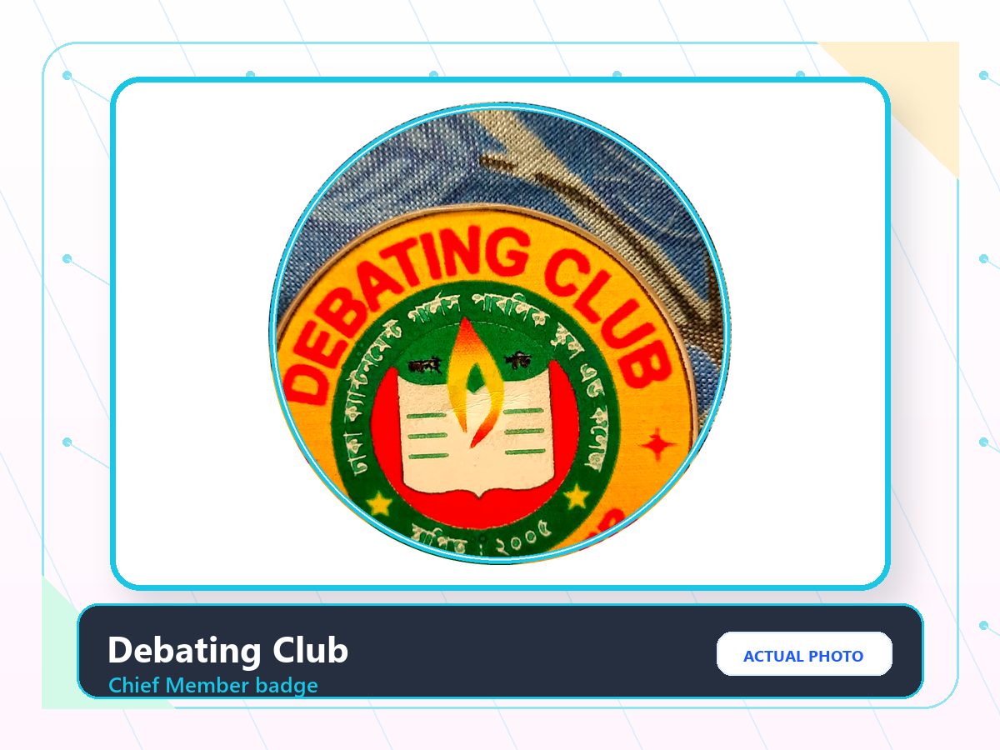

ICT Club Executive Selection 2026
Zannatul Fardaus Zinia
A tech-driven student leader who can code, design, speak, organize, and make club work look seriously cool.
Candidate Summary
Not just professional. This is creative, capable, and club-ready.
Zinia brings programming curiosity, AI workflow skills, Canva and CapCut design ability, public speaking confidence, and two years of club leadership experience. Her selection pitch is simple: ICT Club should feel active, visible, creative, and beginner-friendly.

Selection Round Energy
Executive member, but with main-character organization.
Make ICT visible
Design better posters, event covers, slides, and digital announcements so the club looks alive.
Build student projects
Encourage quizzes, mini-games, websites, and simple coding challenges for all skill levels.
Lead with clarity
Use presentation, debate, and club-president experience to keep teams coordinated and confident.
Skill Stack
Technical plus creative is the whole point.
HTML
C Programming
Algorithmic Thinking
AI Research
Prompt Engineering
Canva Pro
CapCut
Presentation Design
Public Speaking
Club Branding
Projects
Student-made proof, not just claims.
English Shooter Academy
A gamified English-learning experience built to make practice feel interactive and fun for younger learners.
Launch projectGame Lab 2
The public Netlify build is currently returning a 404, but the creator link is preserved as part of the project record.
Open archived linkClub Branding and Media
Official-style logos, posters, multimedia visuals, and presentations selected for Principal-level presentation.
View portfolioInteractive Simulator
ICT Candidate Terminal Simulator
zinia_vibe_check.sh
Zinia Candidate Terminal v1.0.0
Ready. Select a diagnostic to begin...
Ready. Select a diagnostic to begin...
Awards Wall
Evidence that looks serious enough for teachers and sharp enough for ICT.


DRMC Sudoku Champion
Champion in Sudoku, Secondary category, DRMC Science Carnival 2023.

Cricket Champion
Inter House Annual Sports Competition 2024, cricket champion.

Sports First Prize
Inter House Annual Sports 2020, Junior Group-B first prize.

School Medal
DCGPSC recognition medal, included as real award evidence.

Poem Recitation
Third place in 15 August National Mourning Day poem recitation competition.

Bangla Recitation
Third place in Bangla recitation, Cultural Week 2023, class nine group.

Debating Club
Actual Chief Member badge photo and public speaking proof.
Leadership Promise
What Zinia will bring to ICT Club
Creative ICT event branding that students actually notice.
Friendly beginner sessions for HTML, simple C logic, AI tools, and digital design.
Student project showcases for games, quizzes, posters, and presentations.
A club culture where members feel confident presenting what they build.